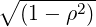

Chapter 11
Space-time log-Cox process
The R source for this file is available at
http://www.math.ntnu.no/inla/r-_inla.org/tutorials/spde/R/spde-_tutorial-_stpp.R
In this chapter we show how to fit a spatio temporal log-Cox point process model. In
Section 11.1 we have an example. In Section 11.2 we show an approach to deal with large data
sets.
11.1 Burkitt example
The R source for this file is available at
http://www.math.ntnu.no/inla/r-_inla.org/tutorials/spde/R/spde-_tutorial-_burkitt.R
We use the burkitt data set from the splancs package.
data('burkitt', package='splancs')
t(sapply(burkitt[, 1:3], summary))
## Min. 1st Qu. Median Mean 3rd Qu. Max.
## x 255 269.0 282.5 286.3 300.2 335
## y 247 326.8 344.5 338.8 362.0 399
## t 413 2412.0 3704.0 3530.0 4700.0 5775
-
The folowing commands shows the time when each event occurred, Figure 11.1.
n <- nrow(burkitt)
par(mfrow=c(1,1), mar=c(1.5,.1,.1,.1), mgp=c(2,0.7,0))
plot(burkitt$t, rep(1,n), type='h', ylim=0:1, axes=FALSE, xlab='', ylab='')
box(); axis(1)
-
We have to define a set of knots over time in order to fit SPDE spatio temporal model. It is
then used to built a temporal mesh
k <- 6
tknots <- seq(min(burkitt$t), max(burkitt$t), length=k)
abline(v=tknots, lwd=4, col=4) ## add to plot
mesh.t <- inla.mesh.1d(tknots)
-
The spatial mesh can be done using the polygon of the region as a boundary. We can convert
the domain polygon into a SpatialPolygons class with
domainSP <- SpatialPolygons(list(Polygons(
list(Polygon(burbdy)), '0')))
-
and the use it as a boundary
mesh.s <- inla.mesh.2d(burpts, boundary=inla.sp2segment(domainSP),
max.edge=c(10, 25), cutoff=3) ### just a crude mesh
-
Defining the SPDE model considering the PC-prior derived in [Fuglstad et al., 2017] for the
model parameters as the practical range,  ∕κ, and the marginal standard deviation.
∕κ, and the marginal standard deviation.
spde <- inla.spde2.pcmatern(
mesh=mesh.s, alpha=2, ### mesh and smoothness parameter
prior.range=c(0.05, 0.01), ### P(practic.range<0.05)=0.01
prior.sigma=c(1, 0.01)) ### P(sigma>1)=0.01
m <- spde$n.spde
-
The spatio temporal projector matrix is made considering both spatial and temporal
locations and both spatial and temporal meshes.
dim(Ast <- inla.spde.make.A(mesh=mesh.s, loc=burpts, n.group=length(mesh.t$n),
group=burkitt$t, group.mesh=mesh.t))
-
Internally inla.spde.make.A function makes a row Kronecker product (see inla.row.kron)
between the spatial projector and the group (temporal in our case) projector. This matrix has
number of columns equals to the number of nodes in the mesh times the number of
groups.
The index set is made considering the group feature:
idx <- inla.spde.make.index('s', spde$n.spde, n.group=mesh.t$n)
-
The data stack can be made considering the ideas for the purerly spatial model. So, we do
need to consider the expected number of cases at the 1) integration points and 2) data locations.
For the integration points it is the spacetime volume computed for each mesh node and time
knot, considering the spatial area of the dual mesh polygons, as in Chapter 10, times the the
length of the time window at each time point. For the data locations it is zero as for a point the
expectation is zero, in accord to the likelihood approximation proposed by [Simpson et al.,
2016].
The dual mesh is extracted considering the function inla.mesh.dual(), available in
http://www.math.ntnu.no/inla/r-_inla.org/tutorials/spde/R/spde-_tutorial-_functions.R
source('R/spde-tutorial-functions.R')
dmesh <- inla.mesh.dual(mesh.s)
-
Them, we compute the intersection with each polygon from the mesh dual using the
functions gIntersection() from the rgeos package (show the sum of the intersection polygons
areas):
library(rgeos)
sum(w <- sapply(1:length(dmesh), function(i) {
if (gIntersects(dmesh[i,], domainSP))
return(gArea(gIntersection(dmesh[i,], domainSP)))
else return(0)
}))
## [1] 11035.01
-
We can see that it sum up the same as the domain area:
-
The spatio temporal volume is the product of these values and the time window length of
each time knot.
st.vol <- rep(w, k) * rep(diag(inla.mesh.fem(mesh.t)$c0), m)
-
The data stack is built using
y <- rep(0:1, c(k * m, n))
expected <- c(st.vol, rep(0, n))
stk <- inla.stack(data=list(y=y, expect=expected),
A=list(rBind(Diagonal(n=k*m), Ast), 1),
effects=list(idx, list(a0=rep(1, k*m + n))))
-
Model fitting (using the cruder approximation: ’gaussian’)
pcrho <- list(prior='pccor1', param=c(0.7, 0.7))
form <- y ~ 0 + a0 +
f(s, model=spde, group=s.group,
control.group=list(model='ar1', hyper=list(theta=pcrho)))
burk.res <- inla(form, family='poisson',
data=inla.stack.data(stk), E=expect,
control.predictor=list(A=inla.stack.A(stk)),
control.inla=list(strategy='gaussian'))
-
The exponential of the intercept plus the random effect at each spacetime integration point is
the relative risk at each these points. This relative risk times the spacetime volume will give the
expected number of points at each these spacetime locations. Summing it will approaches the
number of observations:
eta.at.integration.points <- burk.res$summary.fix[1,1] + burk.res$summary.ran$s$mean
c(n=n, 'E(n)'=sum(st.vol*exp(eta.at.integration.points)))
## n E(n)
## 188.0000 187.9949
-
We can plot the posterior marginal distributions for the intercept and parameters, in
Figure 11.1, with
par(mfrow=c(2,2), mar=c(3,3,1,1), mgp=c(1.7,0.7,0))
plot(burk.res$marginals.fix[[1]], type='l', xlab='Intercept')
plot(burk.res$marginals.hy[[1]], type='l',
xlim=c(0, 10), xlab='Practical range')
plot(burk.res$marginals.hy[[2]], type='l',
xlim=c(0, 3), xlab='Standard deviation')
plot(burk.res$marginals.hy[[3]], type='l',
xlim=c(0, 1), xlab='time correlation')
-
The projection over a grid for each time knot can be done with
r0 <- diff(range(burbdy[,1]))/diff(range(burbdy[,2]))
prj <- inla.mesh.projector(mesh.s, xlim=range(burbdy[,1]),
ylim=range(burbdy[,2]), dims=c(100, 100/r0))
ov <- over(SpatialPoints(prj$lattice$loc), domainSP)
m.prj <- lapply(1:k, function(j) {
r <- inla.mesh.project(prj, burk.res$summary.ran$s$mean[1:m+(j-1)*m])
r[is.na(ov)] <- NA; return(r)
})
-
The fitted latent field at each time knot is in Figure 11.1, produced with the code below. It
can also be done for the standard deviation.
igr <- apply(abs(outer(burkitt$t, mesh.t$loc, '-')), 1, which.min)
zlm <- range(unlist(m.prj), na.rm=TRUE)
par(mfrow=c(2,3), mar=c(0,0,0,0))
for (j in 1:k) {
image(x=prj$x, y=prj$y, z=m.prj[[j]], asp=1,
xlab='', zlim=zlm, axes=FALSE, col=tim.colors(64))
points(burkitt[igr==j, 1:2], pch=19)
}; image.plot(legend.only=TRUE, zlim=zlm, legend.mar=5)
-
11.2 Large data set
We are going to drawn samples from a separable space time intensity function.
First we define the spatial domain as follows
x0 <- seq(0, 4*pi, length=15)
domain <- data.frame(x=c(x0, rev(x0), 0))
domain$y <- c(sin(x0/2)-2, sin(rev(x0/2))+2, sin(0)-2)
-
and convert it into the SpatialPolygons class
library(sp)
domainSP <- SpatialPolygons(list(Polygons(list(Polygon(domain)), '0')))
-
We choose to sample a dataset using the lgcp, [Taylor et al., 2013], package as follows
library(lgcp)
ndays <- 15
n <- (xyt <- lgcpSim(
owin=spatstat:::owin(poly=domain), tlim=c(0,ndays),
model.parameters=lgcppars(1,0.5,0.1,0,0.5), cellwidth=0.1,
spatial.covmodel='matern', covpars=c(nu=1)))$n
-
In order to fit the model, we do need to define a discretization over space and over time.
For the time domain, we define a temporal mesh based on a number of time knots:
k <- 7; tmesh <- inla.mesh.1d(seq(0, ndays, length=k))
-
The spatial mesh is defined using the domain polygon:
smesh <- inla.mesh.2d(boundary=inla.sp2segment(domainSP),
max.edge=1, cutoff=0.3)
-
We can have a look in Figure 11.2 to see a plot of a sample of the data over time, the
time knots and over space and the spatial mesh as well with the commands below
par(mfrow=c(2,1), mar=c(1.5,0,0,0), mgp=c(1,0.5,0))
plot(sample(xyt$t,500), rep(1,500), type='h', ylim=0:1,
xlab='Day', ylab='', axes=FALSE); box(); axis(1)
abline(v=tmesh$loc, col=4, lwd=3)
par(mar=c(0,0,0,0))
plot(smesh, asp=1, main='')
points(xyt$x, xyt$y, cex=0.5, pch=3)
-

11.2.1 Space-time aggregation
For large datasets it can be computationally demanding to fit the model. The problem is
because the dimention of the model would be n + m*k, where n is the number of data points, m
is the number of nodes in the mesh, k is the number of time knots. In this section we choose to
aggregate the data in a way that we have a problem with dimention 2 *m*k. So, this approach
really makes sence when n >> m * k.
We choose to aggregate the data in accord to the integration points to make the fitting
process easier. We also consider the dual mesh polygons, as shown in Chapter 10.
So, firt we find the Voronoi polygons for the mesh nodes
library(deldir)
dd <- deldir(smesh$loc[,1], smesh$loc[,2])
tiles <- tile.list(dd)
-
Convert it into SpatialPolygons:
polys <- SpatialPolygons(lapply(1:length(tiles), function(i)
{ p <- cbind(tiles[[i]]$x, tiles[[i]]$y)
n <- nrow(p)
Polygons(list(Polygon(p[c(1:n, 1),])), i)
}))
-
Find to which polygon belongs each data point:
area <- factor(over(SpatialPoints(cbind(xyt$x, xyt$y)),
polys), levels=1:length(polys))
-
Fint to which part of the time mesh belongs each data point:
t.breaks <- sort(c(tmesh$loc[c(1,k)],
tmesh$loc[2:k-1]/2 + tmesh$loc[2:k]/2))
table(time <- factor(findInterval(xyt$t, t.breaks),
levels=1:(length(t.breaks)-1)))
##
## 1 2 3 4 5 6 7
## 177 302 324 362 402 413 196
-
Use these both identification index sets to aggregate the data
agg.dat <- as.data.frame(table(area, time))
for(j in 1:2) ### set time and area as integer
agg.dat[[j]] <- as.integer(as.character(agg.dat[[j]]))
str(agg.dat)
## 'data.frame': 1064 obs. of 3 variables:
## $ area: int 1 2 3 4 5 6 7 8 9 10 ...
## $ time: int 1 1 1 1 1 1 1 1 1 1 ...
## $ Freq: int 0 0 1 0 0 1 0 1 2 3 ...
-
We need to define the expected number of cases (at least) proportional to the area of the
Polygons times the width length of the time knots. Compute the intersection area of each
polygon with the domain (show the sum).
library(rgeos)
sum(w.areas <- sapply(1:length(tiles), function(i)
{ p <- cbind(tiles[[i]]$x, tiles[[i]]$y)
n <- nrow(p)
pl <- SpatialPolygons(list(Polygons(list(Polygon(p[c(1:n, 1),])), i)))
if (gIntersects(pl, domainSP))
return(gArea(gIntersection(pl, domainSP)))
else return(0)
}))
## [1] 50.26548
-
A summary of the polygons area is
## Min. 1st Qu. Median Mean 3rd Qu. Max.
## 0.06293 0.21780 0.35040 0.33070 0.41160 0.69310
-
and the area of the spatial domain is
-
The time length (domain) is 365 and the width of each knot is
(w.t <- diag(inla.mesh.fem(tmesh)$c0))
## [1] 1.25 2.50 2.50 2.50 2.50 2.50 1.25
-
where the knots at boundary are with less width than the internal ones.
Since the intensity function is the number of cases per volumn unit, with n cases
the intensity varies around the average number of cases (intensity) by unit volumn
(i0 <- n / (gArea(domainSP) * diff(range(tmesh$loc))))
## [1] 2.88601
-
and this value is related to an intercept in the model we fit below. The space-time volumn
(area unit per time unit) at each polygon and time knot is
summary(e0 <- w.areas[agg.dat$area] * (w.t[agg.dat$time]))
## Min. 1st Qu. Median Mean 3rd Qu. Max.
## 0.07866 0.45690 0.64780 0.70860 0.97130 1.73300
-
11.2.2 Model fit
The projector matrix, SPDE model object and the space-time index set definition:
A.st <- inla.spde.make.A(smesh, smesh$loc[agg.dat$area,],
group=agg.dat$time, mesh.group=tmesh)
spde <- inla.spde2.matern(smesh)
idx <- inla.spde.make.index('s', spde$n.spde, n.group=k)
-
Defining the data stack
stk <- inla.stack(data=list(y=agg.dat$Freq, exposure=e0),
A=list(A.st, 1),
effects=list(idx,
list(b0=rep(1, nrow(agg.dat)))))
-
the formula
formula <- y ~ 0 + b0 +
f(s, model=spde, group=s.group, control.group=list(model='ar1'))
-
and fitting the model
res <- inla(formula, family='poisson',
data=inla.stack.data(stk), E=exposure,
control.predictor=list(A=inla.stack.A(stk)),
control.inla=list(strategy='gaussian'))
-
The log of the average intensity and the intercept summary:
round(cbind(true=log(i0), res$summary.fixed),4)
## true mean sd 0.025quant 0.5quant 0.975quant mode kld
## b0 1.0599 0.8721 0.1235 0.6253 0.8726 1.1157 0.8737 0
-
The expected number of cases at each integration point can be used to compute the total
expected number of cases
eta.i <- res$summary.fix[1,1] + res$summary.ran$s$mean
c(n=xyt$n, 'E(n)'=sum(rep(w.areas, k)*rep(w.t, each=smesh$n)*exp(eta.i)))
## n E(n)
## 2176.000 2174.872
-
The spatial surface at each time knot can be computed by
r0 <- diff(range(domain[,1]))/diff(range(domain[,2]))
prj <- inla.mesh.projector(smesh, xlim=bbox(domainSP)[1,],
ylim=bbox(domainSP)[2,], dims=c(r0*200, 200))
g.no.in <- is.na(over(SpatialPoints(prj$lattice$loc), domainSP))
t.mean <- lapply(1:k, function(j) {
z <- inla.mesh.project(prj, res$summary.ran$s$mean[idx$s.group==j])
z[g.no.in] <- NA
return(z)
})
-
and is visualized in Figure 11.2.2 is visualized by
zlims <- range(unlist(t.mean), na.rm=TRUE)
library(fields)
par(mfrow=c(4,2), mar=c(0.1,0.1,0.1,0.1))
for (j in 1:k) {
image(prj$x, prj$y, t.mean[[j]],
axes=FALSE, zlim=zlims, col=tim.colors(30))
points(xyt$x[time==j], xyt$y[time==j], cex=0.1)
}
image.plot(prj$x, prj$y, t.mean[[j]]+1e9, axes=FALSE, zlim=zlims, xlab='',
legend.mar=10, legend.width=5, col=tim.colors(30), horizontal=T)
-